Transaction Matching Administration
Transaction Matching Administration was designed to require as little maintenance as possible. Match Sets are created for two or three data sets, where information is to be compared and – where possible – you should aim to create as few Match Sets as possible and create multiple Match Sets only when different information is being tied out. Case in point, you shouldn’t expect to create a separate Match Set for each Intercompany trading partner. Rather, you would create a single Match Set for all Intercompany information and set up security on the data to enable Users to only see data that applies to them. Within this chapter, we will dive into Match Set setup, security, and rules, and further explain the ‘why’ behind the Administration, plus how to set up your Transaction Matching environment.
Transaction Matching Administration
Settings
The Settings page is the first step you will take in setting up your Transaction Matching application. Within this page, you will do the initial configuration for the entire application. As this page is used to create your application, only OneStream Administrators or Transaction Matching Administrators may access it. This security access is configured in Global Options, discussed in this section. There are four different sections within settings, including:
Global Options
Access Control
Match Sets
Uninstall
| Note: Transaction Matching Match Sets relate to Workflow Profiles, meaning each Match Set is assigned to a different Workflow Profile. However, the settings are the same for all Match Sets, and thus, the settings pages persist through all Match Sets. |
Transaction Matching Administration › Settings
Global Options
This page contains the key properties that guide the Transaction Matching administration and is used for the initial setup and configuration of Transaction Matching. All settings within this page are retained during solution upgrades.
Transaction Matching Administration › Settings › Global Options
Security Role (Manage Transaction Matching Setup)
Anyone assigned to this OneStream User Group is considered a Transaction Matching Super User and is also referred to as a Transaction Matching Administrator, meaning they have access to all aspects of the Transaction Matching application.
Once a group is assigned, initially by a OneStream Administrator, anyone within the group will have the ability to configure all aspects of the Transaction Matching solution (which does not include the ability to set up Workflows), as well as the ability to match, unmatch, suspend, and delete transactions. The only role that supersedes the Transaction Matching Administrator is the OneStream System Administrator, and as such, any OneStream Administrator can perform all actions within Transaction Matching that a Transaction Matching Administrator can perform. As this group’s rights encompass all aspects of Transaction Matching configuration, the default group assigned upon install is Administrators.
To change the group assigned, select a system Security Group from the drop-down, and then click Save at the bottom of the page. To create a group to be used, follow the steps defined as per Chapter 2 – Account Reconciliations Administration.
Transaction Matching Administration › Settings › Global Options
Data Splitting Workflow Profile
Data splitting provides the ability to divide a single data source between numerous data sets across multiple Match Sets. This flexibility enables a file to be accessed across different areas such as departments or divisions, while controlling access and visibility through the separate Match
Sets. This drop-down contains all Workflow Profiles within the OneStream Application. Select the Workflow Profile that is to be used for data splitting. This Workflow Profile will not have the ability to perform any matching activity (as shown in Figure 6.1); rather, this is simply an import profile to be used when a single file contains data that must be split into different Match Sets.
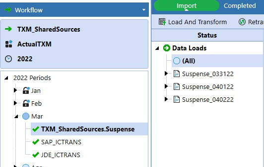
Figure 6.1
Let’s walk through a couple of examples as to when data splitting would be necessary.
Within this section, we will show screenshots from within the Administration page, the setup of which will be discussed later. This information is given now to provide a context of when and why you would use data splitting. One instance would be if you have a single file that contains all suspense activity – both debits and credits – and you need to compare the debit activity to the credit activity. Transaction Matching requires at least two data sets, so matching would not be possible unless:
Your IT department uses the initial file to create two separate files.
Your IT department creates two different data sources for the file, one for debits and one for credits.
Or you create a data-splitting Workflow Profile.
Choosing the third option is definitely best from a OneStream Administrator’s perspective, as it gives the finance User the ability to administer the file without IT involvement. For this example, you would import the suspense file, and the debit amount (Figure 6.2) would be the amount being compared for the first data set, and the credit (Figure 6.3) would be the amount compared for the second within the Transaction Matching Administration page. Note that both data sets have the same Import Workflow Profile but are comparing different columns of values.
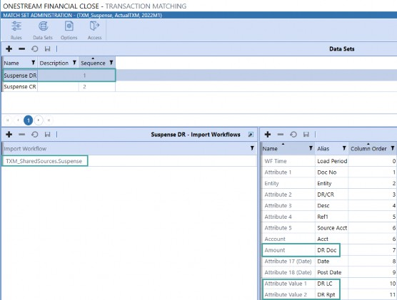
Figure 6.2
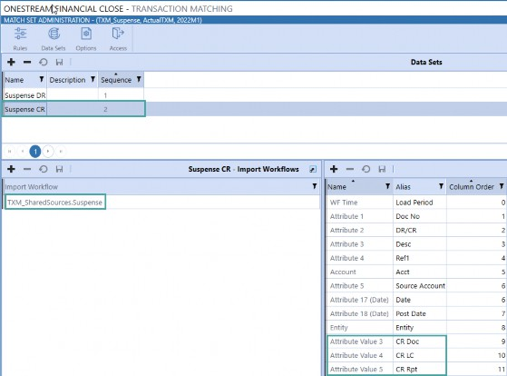
Figure 6.3
Another example of when data splitting would be useful would be for Intercompany matching.
In many instances, all Intercompany balances are held within a single, top-level Account, and the Entity balances are held within that roll-up. Let’s assume your company’s total Intercompany Payables are held on Account 20XXX, and you use this Account number to pull the total balance, and each Entity’s Intercompany Payables balance is input into XXX to pull up their specific balance (e.g., if Houston Heights is Entity number 002, the corresponding Intercompany Payables Account for that Entity is 20002).
As you can imagine, creating different connectors or files for each Entity would be extremely cumbersome for IT, so here is where a reader can come in as a superstar Administrator! Utilize data splitting for your Intercompany payables file and create Match Sets where ownership exists.
What do we mean by this?
Creating Match Sets for each Entity also wouldn’t be desirable from a OneStream perspective because you don’t want to have to maintain rules and set up for thousands of companies. Instead, split the data up to a level appropriate for your company’s maintenance. Maybe you have Shared Services in North America, AMEA, and APAC, so – in this instance – three Match Sets would be ideal because you have ownership at each level. Furthermore, you can set security at the Entity level on data, so if Users should only be able to see transactions for specific Entities – for which they have read/write permissions – we can prevent them from seeing data that does not relate to them (discussed in Data Security).
In order to assign a data splitting Workflow Profile, it must first be created within the Application tab. Note that the examples shown throughout this book are within a separate Parent-level Workflow Profile, Transaction Matching. Creating a separate Workflow Profile for Transaction Matching is not necessary. The Profile Properties for the data splitting Workflow Profile should be set as shown in Figure 6.4.
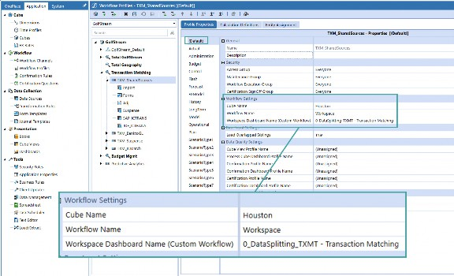
Figure 6.4
For all import steps added (data to be split), follow Figure 6.5.
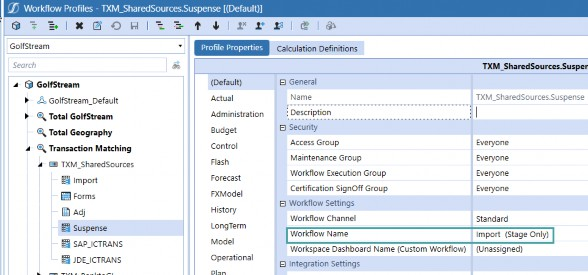
Figure 6.5
Transaction Matching Administration › Settings
Access Control
The Access Control page within Global Options is used to set up Access Groups to be applied to the Match Sets.
An Access Group is a list of Users and their respective roles that are created by OneStream Administrators or Transaction Matching Administrators. Unlike Account Reconciliations, Match Sets do not have primary roles. As such, any person assigned to a role within the Access Group may take action on the Match Set for that role level.
For instance, an Access Group may contain more than one User assigned to the Preparer role. In this instance, all Users assigned as Preparer may take Preparer actions. Additionally, like Account Reconciliations, Transaction Matching security utilizes a step-down approach, meaning that a User may take action on a Match at any role equal or below the role they are assigned, as long as they have not already taken action on a Match.
The table in Figure 6.6 outlines the various roles, what Platform System Security Roles may be assigned to the role, where the role is configured, and the actions the role may take.
| Role | Assignable System Security Roles | Configuration | Actions |
|---|---|---|---|
| Viewer | Users | Access Control | • View transactions (Unmatched, Matched, Suspended, Pending Delete) • View Matches page • View Scorecard • View comments and attachments • Drill back to transaction details |
| Commenter | Users | Access Control | • Perform all Viewer actions • Add comments to matches and transactions |
| Preparer | Users | Access Control | • Perform all Commenter actions • Add attachments to matches and transactions • Create manual matches and match + • Accept suggested matches |
| Role | Assignable System Security Roles | Configuration | Actions |
|---|---|---|---|
• Unmatch suggested and manual matches • Process Match Set Rules • Suspend transactions • Create detail items (used to support Account Reconciliations) • Assign match Reason Codes • Assign suspension Reason Codes • Delete transactions (putting them in a ‘Pending Delete’ status) • Recall transactions that are Pending Delete • Complete the Workflow | |||
| Approver | Users | Access Control | • Perform all Preparer actions • Approve and unapprove suggested and manual matches • Permanently delete transactions that are Pending Delete |
| Local Admin | Users | Access Control | • Perform all Approver actions • View all pages within Administration (Rules, Data Sets, Options, and Access) • Create and manage rules • Create and edit data sets and data set fields • Create and edit rule sets • Create and edit Reason Codes • Add, remove, and edit User access to Match Sets |
| Transaction Matching Admin | Group | Global Options | • Perform all Local Admin actions • Navigate to the Transaction Matching Settings page and modify and configure all Matching Settings • View Deleted transactions from the Transactions page • Remove Deleted transactions |
| OneStream System Admin | Users | System Security | • Perform all Transaction Matching Admin actions • Assign Transaction Matching Admin |
Figure 6.6
It is important to note that if your organization is planning to utilize Transaction Matching information to support Account Reconciliations, User security should be in line between both solutions. This means that if Muhammad is a Preparer of the cash Reconciliations, he should also be a Preparer of the Match Set assigned to the cash Reconciliations.
In this way, Muhammad could either push support from Transaction Matching to all of his cash Reconciliations or go into each cash Reconciliation and pull the support from Transaction Matching into the Reconciliation. Creating detail item support using Transaction Matching data is discussed, in detail, in both Chapter 4 and Chapter 8.
To create an Access Group (Figure 6.7):
Navigate to the Access Control page within Settings.
Select + to create a new group.
Name the Access Group. This name is what will appear in the drop-down of available Access Groups on the Match Sets setting page. Note that this name cannot be changed upon Save.
Add a description for the Access Group. This description will not appear anywhere else in the solution but is for your reference. Save the Access Group.
Once the Access Group is created, you can assign Security Users. To add a User, select +.
Select a User from the drop-down.
Assign a role to that User.
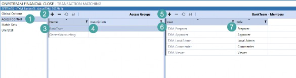
Figure 6.7
Transaction Matching Administration › Settings
Match Sets
The Match Sets page is where you assign a Workflow Profile for a Match Set. In order to set up your Match Sets, you must first create the Workflow Profiles within the application. As such, prior to configuring Transaction Matching, first determine where you will be performing your matching activities. You do not need to create new Workflow Profiles or Scenarios for Transaction Matching, as we show in many of our examples throughout this book. However, for our examples, you will see specific Scenarios and Workflow Profiles created to easily identify the matching activities.
Prior to assigning the Match Sets to the Workflow Profiles, assign the Transaction Matching Workspace Dashboard, 0_Frame_TXM_OnePlace-TransactionMatching, to at least one Workflow Profile within the Application tab, as shown in Figure 6.8.
Again, for our examples, we have created distinct Workflow Profiles for matching purposes, which is not necessary. The only necessity is that the Dashboard is assigned to a top Workflow Profile (and not a Base Input step within the Profile).
In the example shown, the Dashboard has been assigned to the TXM_BanktoGL Profile. However, we could have just as easily assigned this to one of the Workflow Profiles used for Actuals or Forecasting, such as the Houston Workflow Profile. In the past, we have seen customers perform matching activities that support Actual Account balances, such as Intercompany matching. In these instances, customers have chosen to assign the matching Dashboard to the Workflow Profile where the Intercompany Accounts are reported, and in the Actual Scenario.
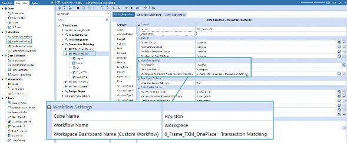
Figure 6.8
Once all Workflow Profiles related to matching have been created, you can assign matching activity to the Workflow Profile. Creation of a Match Set, or identifying the Workflow Profile where the Match Set will be held, doesn’t do much in terms of creating the rules, etc., but rather, is setting up the shell to start matching.
Figure 6.9 shows the Match Sets page. Essentially, utilize this page to select the Workflow Profile where the Match Set will live, the Scenario related to the Match Set, and the Access Group for the Match Set.
| Note: Workflow Profile Security must also be set up for Users. Simply creating and assigning an Access Group will not work if the Users within the Access Group do not also have access to the Workflow Profile. |
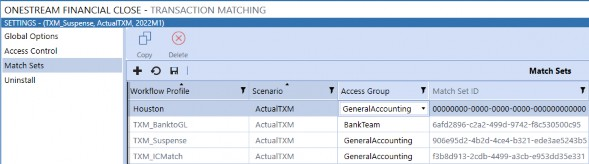
Figure 6.9
Note that once you have gone through the process of creating Match Set Rules and a data set framework, you can copy a Match Set. Utilizing Copy will allow you to replicate all rules configured from the source Match Set. This is a great tool to utilize in instances where rules are similar across Match Sets but have subtle differences that can be easily updated after creation. Let’s say I had Intercompany Matching Rules that I set up for Houston, which would be the same for all Workflow Profiles except for the Entity number, I would configure the rules for Houston, and then copy that Match Set to all other Entities. In Figure 6.10, we are copying the Houston Match Set and assigning the same rules to the Quebec Match Set. Configuring rules and data sets will be discussed later in this chapter.
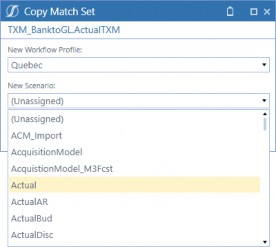
Figure 6.10
Transaction Matching Administration › Settings
Uninstall
The Uninstall page allows you to uninstall all solutions within OneStream Financial Close, which includes Account Reconciliations and Transaction Matching. If uninstall is performed as part of an upgrade, any modifications that were made to standard solution contents are removed.
Transaction Matching Administration › Settings › Uninstall
Uninstall UI – OneStream Financial Close
Removes all solutions within OneStream Financial Close, including all Dashboards and Business Rules but leaves the databases and related tables intact. Performing this step is encouraged for most upgrades as Dashboards are often modified within the solutions. However, it is important to note that when this is done, the Workspace Dashboard Name for every Workflow Profile – including data splitting Workflow Profiles – must be reassigned.
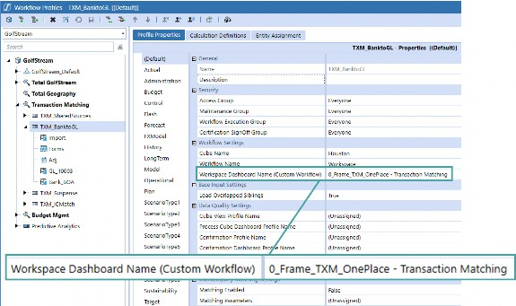
Figure 6.11
Transaction Matching Administration › Settings › Uninstall
Uninstall Full
Removes all related data tables, all data, all solutions’ Dashboards, and all Business Rules. Select this option to completely remove the solutions.
| Note: This option is irreversible and is therefore not recommended. |
This option should only be utilized if your company has determined it will not be using any of the OneStream Financial Close solutions, or if the Release Notes for the version being installed state that the upgrade is so significant in its changes to the data tables that this method is required.
Transaction Matching Administration
Administration
The Match Set Administration contains pages to design the Match Set Rules, configure data sets, configure Match Set options, and update Access Groups. The Administration relates to the specific configuration of the Match Set that is selected in the Workflow. As such, to configure the rules, data sets, etc., for your Match Sets, first select the Match Set to be configured in the Workflow, and then navigate to the Administration, as shown in Figure 6.12. This area can only be accessed by Transaction Matching Administrators or OneStream Administrators.
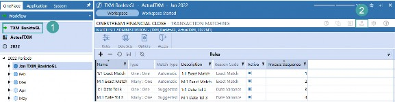
Figure 6.12
Transaction Matching Administration › Administration
Data Sets
While this icon is not the first in order within the header, it should be the first step for Match Set configuration. The Rules icon is at the far left as rules are often updated and/or changed, but the rules should not be created until your data sets are properly configured.
A data set is the transactional data that is imported and used for matching. You must have at least two, and up to three, sources of information for matching purposes. Some examples of data sets for matching purposes would be a bank file Matched against a GL file, a Suspense Account file split between debits and credits (discussed in the data splitting section), and an Intercompany file split between debits and credits.
In these instances, we would be comparing two different data sources to see where matches and variances exist. An example of where three data sets would exist within a single Match Set would be comparing a register of purchase orders created, a register of goods received, and a listing of invoices – and ensuring the three match prior to making payment on invoice.
Add a line item for each type of data that is being Matched. While we have listed a single source of transaction-level information, it is important to also note that data can be compiled from multiple different files to make up a single data set, which is discussed more in the Import Workflows section. Be sure you have created a line item for each data set (up to three), prior to performing any matching activity because data sets may not be added once a match has been made.
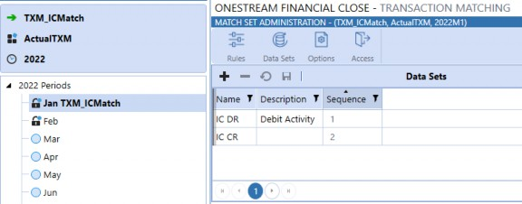
Figure 6.13
Transaction Matching Administration › Administration › Data Sets
Name
The name created here will be the name displayed for the data set throughout the solution, including headers on the Transactions and Matches page and in the Analysis section. The name may be edited at any point.
Transaction Matching Administration › Administration › Data Sets
Description
This is a reference column for the description of the data set. This information is not displayed elsewhere in the solution. The description may be edited at any point.
Transaction Matching Administration › Administration › Data Sets
Sequence
This is a drop-down list utilized to establish the order of the data sets (1, 2, 3) displayed on the Matches and Manual Matches pages. The first data set (DS1) should be your primary data set as it is used to compare against the remaining data sets. This cannot be edited once saved.
Transaction Matching Administration › Administration › Data Sets
Data Security
If a Cube is selected for data security on the Options page, this column will appear, as shown in Figure 6.14. This is to set the security level for the data set, either Entity, IC, Entity OR IC, and Entity AND IC. This setting establishes what is displayed to the User and can therefore be edited at any point.
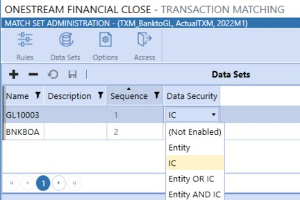
Figure 6.14
For this setting, the system looks to the System Security Groups assigned in the Read and Write Data Group, or the Read and Write Data Group 2, in the security section of the Member Properties on the Entity Dimension.
Although the Transaction Matching Administrators User group has the access necessary to manage the solution, if Data Security is enabled, the ability to view transactions is dependent upon the individual User’s Entity-level security. Users are only able to see transactions for the Entities to which they have Read and Write access (including Transaction Matching Administrators). Leaving the default of Not Enabled allows Users with Workflow access to see all transactions in the Match Set.
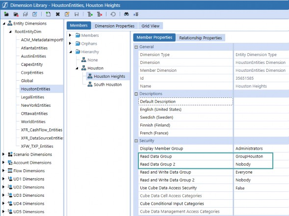
Figure 6.15
This feature was requested by customers utilizing matching for Intercompany purposes. They had a single file containing all Intercompany activity for the company, but those performing matching were only supposed to see data for Entities where they were a trading partner. In this instance, they set the security to show for Entity OR IC and then they would see all transactions where their Entity was involved. For banking, however, you may only want Users to see bank information where their Entity is identified. This would be a use case for Entity-level security. The one item of note is Transaction Matching does not allow for Account-level security. Therefore, if Users should not be able to see certain Accounts, you should utilize data splitting and break out your file by User Account access and create separate Match Sets based on Account security.
Transaction Matching Administration › Administration
Import Workflows
Once you have created the data sets, the next step is establishing where the data will be imported into – for the data set. Each data set may have separate Import Workflow Profiles, or the Profiles may be the same and different fields are referenced.
| Note: Prior to adding the Import Workflows on the Data Set page, the Workflow Import step must be added and created in the Workflow Profile. |
To set up your Transaction Matching Import Workflows, set the Workflow Name to Import (Stage Only), as shown in Figure 6.16
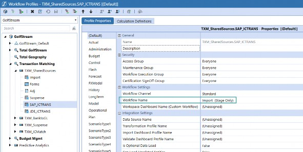
Figure 6.16
Next, select the Profile Property for the Scenario where you will be performing the matching, which is ScenarioType1 in our example, but can be any Scenario as discussed in Settings. There, select your Data Source Name, as shown in Figure 6.17.
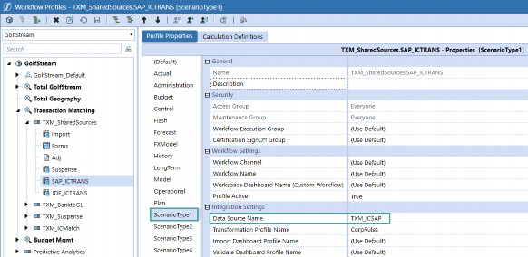
Figure 6.17
After the Workflow Profile Imports have been created for the data set, add them to the data set by selecting the appropriate data set, and then click the + button under Import Workflow Profiles. A drop-down list will appear with all active Import Workflow Profiles for that Workflow Profile, and for the data splitting Workflow Profiles. Select the appropriate Import Profile and save.
| Note: In our example, in Figure 6.18, we have included multiple Import Workflow Profiles. If multiple Profiles are added, they will be sequentially stacked together into a single data set. |
Import Workflows can be added or removed at any point.
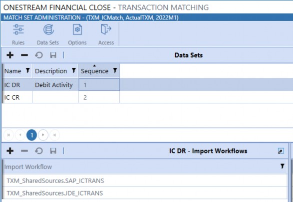
Figure 6.18
Transaction Matching Administration › Administration
Fields
Once you have created the data sets and defined their Import Workflows, you must then define the data fields. In order to complete this step, you must first set up your data source within the Application tab. This is discussed further in Chapter 7.
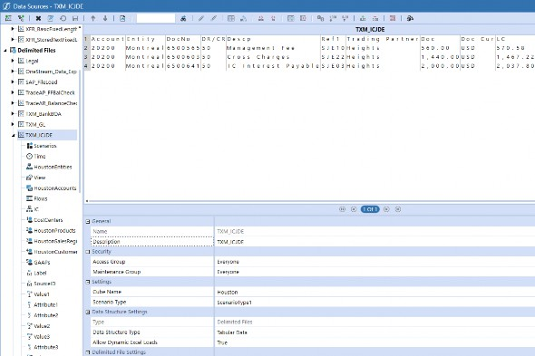
Figure 6.19
The Grid View control can display up to 50 fields at a time. Three of the 50 fields are used to display the Transaction ID, Transaction Number, and Comment/Attachment identification.
Therefore, although there are 73 fields available in the Transaction Matching table, only 47 of the fields can be displayed in the Transaction Matching Grid View.
Transaction Matching Administration › Administration › Fields
Name
The name column directly correlates to the Stage column headers, which means this drop-down includes all column headers that are included in Stage. Once the name is selected and the row is saved, this field cannot be edited, only deleted. Make sure that all columns of data that are configured for the data source are added to the list here. The available field names and description of each are as follows:
Transaction Matching Administration › Administration › Fields
21 Cube Dimensions
Entity, Account, Scenario, Flow, Time, IC, UD1-8, Label, SourceID, TextValue, WF Profile, WF Scenario, WF Time, and Status WF Time are the Cube Dimensions available in the drop-down.
It is very important, when setting up your Match Sets, to first determine if the Match Set will be used to support Account Reconciliations. If the Match Set is used to support Account Reconciliations, you must include all Tracking Levels used for Account Reconciliations in your data set. In many cases, these are S.Entity, S.Account, T.Entity, and T.Account, but could also contain other Tracking Levels such as UDs. This is to allow Administrators to easily utilize existing OneStream dimensionality to configure and set up their Match Sets. While intentional in design, this setup can initially be confusing for Users coming from other point solutions.
Let’s walk through an example of how to configure the fields to map to Account Reconciliations.
As a company, you may have a Match Set that matches a bank file to your GL balances. This bank file could be for multiple, different Bank Accounts which relate to multiple, different Entities which may also have their own set of distinct Source Accounts. This bank file would not contain your source, or GL, Bank Account number and would not have your internally-maintained Entity codes. So, how would you map this data set to Account Reconciliations? You will need to pre-process the data to enhance your external files so that, upon import, the transactional line contains the source Dimensions based on a field in the data.
Step 1: Data source creation, map file to the specific fields. In Figure 6.20, we are identifying the location – per the bank file – to be mapped to the S. Entity; and in Figure 6.21, we are identifying the Bank Account number to be mapped to the GL or S. Account.
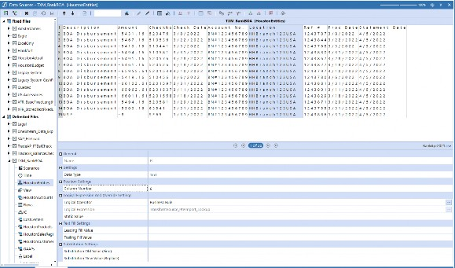
Figure 6.20
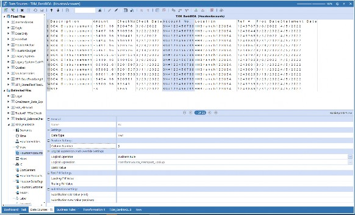
Figure 6.21
Step 2: Create a Transformation Lookup Rule to take the source bank information and map it to the Reconciliation Source Account level. For example, you can see on the first line of Figure 6.22 that we are mapping the HHBranch123USA location listed in the bank file to a Target Value of Heights. This is NOT the final T.Account that is held in the Entity Dimension; rather, this will be your S.Account for Reconciliation mapping purposes.
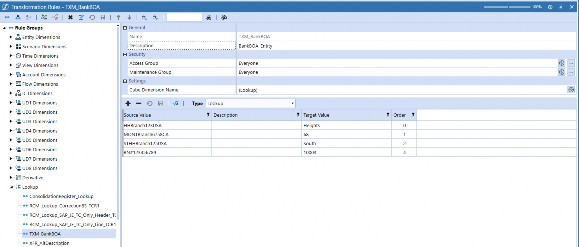
Figure 6.22
Step 3: Create a Parser Rule and update it to call the Lookup Rule created in Step 2.
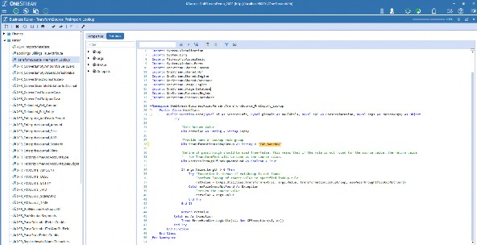
Figure 6.23
Step 4: Update the data source mapping for Entity and Account to call the Parser Rule.
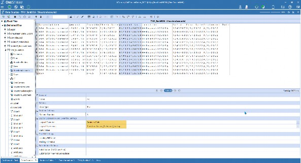
Figure 6.24
Step 5: Load your data file. Note in Figure 6.25 that in our bank CSV file, we see a location of
HHBrank123USA and an Account number of BN#123456789.
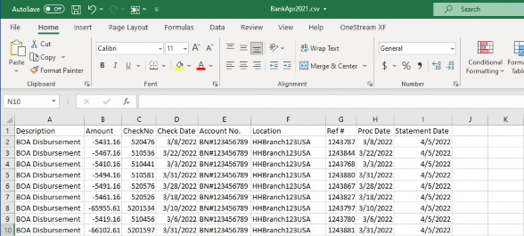
Figure 6.25
Results: The Stage information will now show the data to have source data that aligns with the S.Account, 10003, and S.Entity, Heights, that are used in the Account Reconciliation Tracking Levels.
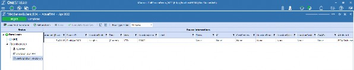
Figure 6.26
By setting this up in this way, once the initial Match Set is set to map to OneStream’s core dimensionality, you no longer need to constantly map your Match Set to new Reconciliations. Rather, you would just need to add to the Transformation Lookup Rule from Step 2. For example, if the bank file added a new Bank Account number, simply add the Bank Account Number Source Account here and identify the corresponding Source Account, and then the system will know where to push the transactional-level information for detail item support creation.
Transaction Matching Administration › Administration › Fields
16 Text Fields
Utilize Attribute Fields 1-16 for any text columns.
Transaction Matching Administration › Administration › Fields
Four Date Fields
Attribute Fields 17-20 are to be used for any dates.
Transaction Matching Administration › Administration › Fields
13 Value Fields
Amount and Attribute Value Fields 1-12 are to be used for values. Examples of multiple types of values would be:
Account, Local, and Reporting amounts in a file
Gross, tax, and net amounts
Or, if comparing invoices and POs, maybe you could have quantity and cost per unit
This configuration establishes what is displayed to the User and, therefore, fields can be added or removed at any point.
Transaction Matching Administration › Administration › Fields
Alias
Here, you enter free form text, which will be the column header to be displayed to Users on the
Transactions page, and on the bottom of the Matches page when a match is selected.
Transaction Matching Administration › Administration › Fields
Column Order
Enter the numerical order the column is to be displayed on the Transactions and Matches page. If you have two columns that you would like to always sit next to each other, give them the same numerical order. The column that was added first, S.Entity in Figure 6.27, will be shown to the left of the column with the same numerical value.
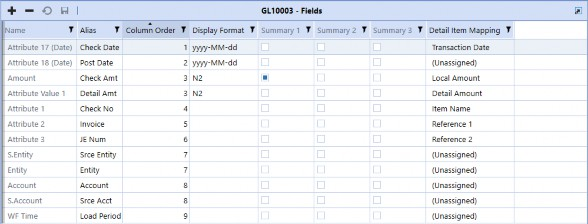
Figure 6.27
Transaction Matching Administration › Administration › Fields
Display Format
This is a text field where you configure how numerical values – such as dates, amounts, and decimals – will be displayed throughout the solution. Some commonly used formats are:
N0 will not show any decimals or zeroes.
N1-N6 shows X number of decimals (N2 shows two decimals, N5 shows five decimals, etc.)
#,###,0\% displays 10,000% and -10,000%
#,###,0.00 displays 10,000.00 and -10,000.00
yyyy-MM-dd displays year, month, and date
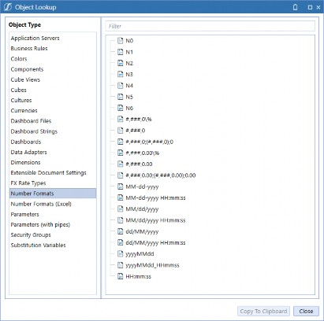
Figure 6.28
Transaction Matching Administration › Administration › Fields
Summary 1 – 3
Transaction Matching can summarize and display up to three value columns. Set the check box to True if this field should be used for the comparison of values for matching purposes. For example, we discussed previously that a Suspense Account could be loaded as a single file, and we could utilize data splitting to compare our debits and credits. For this example, we are summarizing the Amount, DR Local Amount, and DR Reporting Amount for the debit data set (Figure 6.29), and the corresponding credit columns, CR Doc, CD Local Amount, and CR Reporting are being summarized for the credit data set (Figure 6.30).
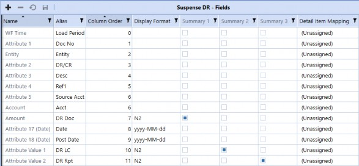
Figure 6.29
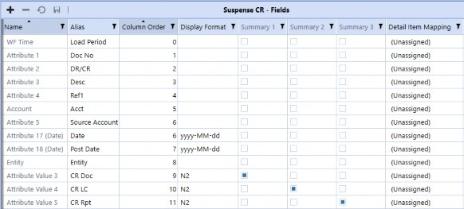
Figure 6.30
Discussion on the implementation for this example will be discussed in Chapter 7, but for now, it is important to note that these summary amounts are the columns that will be summarized and compared at the bottom of the Transactions and Matches pages, as shown at the bottom left of Figure 6.31, and are utilized for manual matching tolerances. As more transactions are selected within the grid, the summarized information will automatically update so that you can easily determine the variance between the data sets.
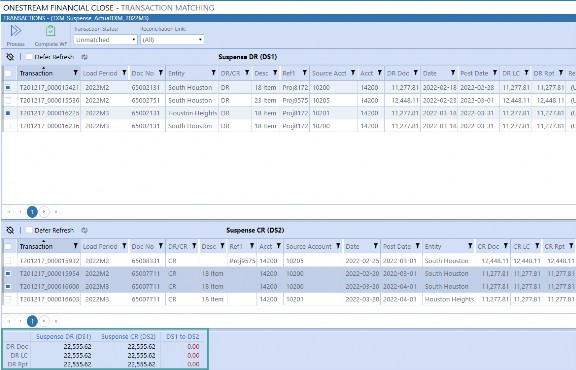
Figure 6.31
| Note: Once a match exists, the summary fields cannot be edited and new summary fields cannot be added, so make sure you identify these fields during your design process. |
Transaction Matching Administration › Administration › Fields
Detail Item Mapping
This column will only be present for applications where integration between Transaction Matching and Account Reconciliations has been enabled in Account Reconciliations. To use Transaction Matching transactions to create detail items in Account Reconciliations, the data sets in Transaction Matching must be assigned to the Account Reconciliation fields. Figure 6.32 shows all the columns that are available with the detail item information.
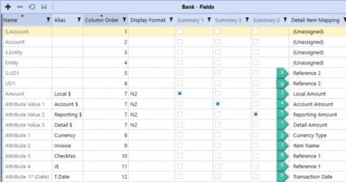
Figure 6.32
Detail Amount: This is the transactional-level amount. If multi-currency is enabled, it identifies the amount to be pulled in as the Account Reconciliation detail amount and this value column must be identified. If no other values are identified, system Translation will occur upon item creation, in line with the process of manually creating detail items.
Currency Type: Detail Amount currency type used when multi-currency is enabled. If a currency type is not mapped, the currency type will default to the Account currency type for the Reconciliation upon creation, which is the same process for manual item creation.
Local Amount: If multi-currency is not enabled, this column must be mapped as it identifies the detail item amount. If multi-currency is enabled, mapping the column is not required.
Account Amount: Overrides what would be calculated for the Account amount if multi-currency is enabled. If this column is not mapped, the Account amount will be automatically calculated upon creation.
Reporting Amount: Overrides what would be calculated for the Reporting amount if multi-currency is enabled. If this column is not mapped, the Reporting amount will be automatically calculated upon creation.
Transaction Date: Date of the transaction. This date is used to create item aging within Account Reconciliations. It is not required to be mapped.
Item Name: Default value for item name. This column is required to be mapped for detail item creation purposes. However, once the transactional detail item has been created using the column information, the item name can be edited within Account Reconciliations prior to the Reconciliation moving to a prepared state.
Reference 1: Concatenates up to two fields and is used to provide additional information. It can be overridden and is dependent on selections made when creating a detail item. Mapping is not required.
Reference 2: Concatenates up to two fields and is used to provide additional information. It can be overridden and is dependent on selections made when creating a detail item. Mapping is not required.
Transaction Matching Administration › Administration
Rules
After configuring your data sets, navigate to the Rules page to configure the matching rules that will be used to match your transactions. Prior to configuring the rules, make a list of all data fields that your transactions can be Matched across, determine if multiple line items in one data set can make up a single line item in another data set (think multiple invoices paid off with a single check), and establish the thresholds you would like for your rules. The more specific and thought-out you can get with your rules during the design phase, prior to implementation, the smoother your implementation will be.
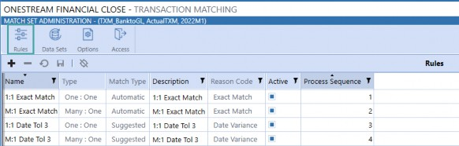
Figure 6.33
The rules are maintained in a table. Some fields can be edited after creation, while others cannot. A rule cannot be deleted once it has been used to make a match. If you would like to edit the rule definitions after a match was made, you must unmatch all your matches. Alternatively, if you have created definitions, groupings, etc., that are needed, but a part of your rule needs to be altered in a non-editable field, such are changing the Reason Code, copy the rule and create a new rule.
It is recommended, if you have Match Sets with similar rules, to first configure that Match Set, including all the applicable rules, and then copy the Match Set and use it as a starting point for future Match Set configurations. This is because, while you can copy a Match Set, rules cannot be copied from one Match Set to another.
Transaction Matching Administration › Administration › Rules
Name
This is a free form text box where you name the rule. The name you enter here is displayed throughout the solution, such as on the Matches page in the “Rule” column indicating the rule used to make the match. It is also the name that appears on the Match Details screen when you drill into the transaction information on the Transactions page. This display text can be edited at any time.
Transaction Matching Administration › Administration › Rules
Type
This is a drop-down list containing the rule types. Once the rule is created, the type cannot be changed. The rule types include:
One to One (1:1) – an exact match in which a single transaction in one data set is compared to a single transaction in the other. An example would be comparing a check register to a bank clearing account. All checks written should directly correlate to the checks that have cleared the bank, and you would expect the check numbers to exactly match.
One to Many (1:M) – a single transaction in one data set that can be Matched with one or more transactions (a grouping) in another. An example would be one check that was applied to many invoices.
Many to One (M:1) – one or more transactions (a grouping) in one data set that are condensed into one transaction and then compared to a single transaction in another.
Many to Many (M:M) – one or more transactions (a grouping) in one data set that are collapsed into a single amount and then compared to the same in another.
Additionally, the following rule types are available for three data set matches:
One to One to One (1:1:1)
One to One to Many (1:1:M)
One to Many to One (1:M:1)
Many to One to One (M:1:1)
One to Many to Many (1:M:M)
Many to Many to One (M:M:1)
Many to One to Many (M:1:M)
Many to Many to Many (M:M:M)
Transaction Matching Administration › Administration › Rules
Match Type
This is a drop-down list of available types, either Automatic (default) or Suggested. Automatic matches do not require any User intervention to be completed but can be Unmatched if desired. Suggested matches require a Preparer to accept the match before the transactions are moved to a Matched status. Suggested matches can also be configured to require approval, if desired. Use Suggested when you set thresholds, expect variances, etc., and want a User to review the match for accuracy and/or material variance.
Transaction Matching Administration › Administration › Rules
Description
This is an optional free form text field that you can utilize to enter additional rule information. This information is not displayed in the solution and is for Administrator reference purposes only. This display text can be edited at any time.
Transaction Matching Administration › Administration › Rules
Reason Code
This is a pre-populated drop-down list containing the Reason Codes that are set up on the Options page. This field cannot be edited once the rule is created. As such, make sure you set up the Reason Codes first – prior to making your rules – or this field will be set to the default of Unassigned.
Transaction Matching Administration › Administration › Rules
Active
By default, this is set to True, meaning the rule should be run during rule processing. Set this to False if the rule is no longer used but has been used in the past to create matches, as rules used to create matches cannot be deleted for audit purposes.
Transaction Matching Administration › Administration › Rules
Process Sequence
The order in which the rules are run. Rules are run in ascending order of the process sequence. Best practice is to have the rules that create the most matches run first. This way, when subsequent rules are processed, the system will have fewer transactions to loop through, thus decreasing the processing time.
Transaction Matching Administration › Administration › Rules
Definition
Once you have created the shell for the rule, including its name and what type of rule you would like to make, you must then configure the real intent of the rule. You do this within the bottom section of the Rules page, starting with the Definition. Here, you will configure the detailed information that is to be applied to the rule. To add the Definition, select the rule at the top of the page. By default, the display at the bottom will show the rule Definition. Note that there are two Field Name and Condition columns because we are selecting the Field Name and Condition for each data set, where Data Set 1 (DS1) is selected first. If there were three data sets for the Match Set, these columns would appear three times. You do not need to apply definitions to all data sets; you can apply to only one if necessary.
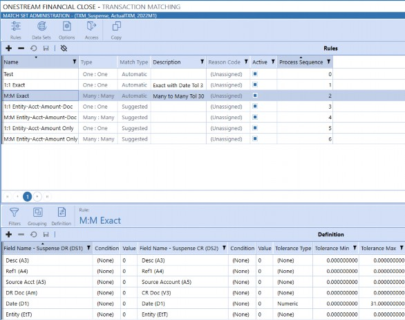
Figure 6.34
Transaction Matching Administration › Administration › Rules › Definition
Field Names
This is a drop-down list of all fields configured for the data set with the Alias shown and the name in parentheses. Note, in Figure 6.34, that for several of the items we are comparing, the same fields are shown, as this example uses rules created for a suspense file where data splitting occurred. But for the value, we are comparing the DR Doc (Amount) in DS1 to the CR Doc (Value 3) in DS2.
Transaction Matching Administration › Administration › Rules › Definition
Conditions
Select the placement (None, Left, Right) for each data set; this is particularly useful if there will be leading or trailing zeroes in one data set that may not exist in the other data sets. For example, if DS1 had values of N6 (100.123456) and DS2 had values of N2 (100.12), you would not want to do an exact match without excluding the last four digits of DS1 as no match would ever occur. In this instance, you would set the placement to the left and the value would be five, to select the first five numbers. Note that this would only work if you knew the count of numbers that exist before the decimal. A good example would be if you know that all invoice numbers have five digits. If you do not, you should format your data as part of your data integration set up to truncate values as needed (e.g., remove the last four digits, 3456).
| Note: Rule conditions help guide the position the rule should be applied to a certain data element. The position can start at the beginning of a string (left) or the end of a string (right). The rule definitions have conditions and value fields for each data set. |
Transaction Matching Administration › Administration › Rules › Definition
Tolerances
Select the type of tolerance to be applied, either percentage or numeric. For example, if you know that check dates might not exactly match the date they clear the bank, but you expect them to clear within the month, you would select the date field for each data set and then set a numeric tolerance of 30.
Or, if you have large currency fluctuations that might cause some values not to exactly match, you could set a percentage tolerance to allow for foreign exchange fluctuations. Only value, amount, and date fields may have tolerances applied to them, and date fields can only have numeric tolerances (not percentages). Dimension fields and attributes cannot have tolerances.
| Note: The tolerance type must be selected for definitions to be applied. If values, conditions, and minimum and maximum tolerances are set, and the type is not selected, the tolerance will not be applied. |
Transaction Matching Administration › Administration › Rules
Filters
Filters are used to determine which transactions should have rules run against them. For example, you may have a single bank file that is used for a data set that contains multiple bank Accounts, but different Accounts may require different rules. In this instance, you would filter out specific Accounts for the rule, as shown in Figure 6.35. To do so, select the rule at the top of the page, click the filter icon, and then add a filter. Only the Unmatched transactions returned by the filter are used during rule processing. Filters can be deleted at any time.
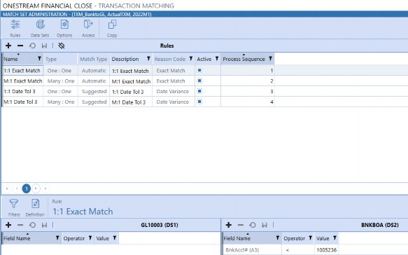
Figure 6.35
Transaction Matching Administration › Administration › Rules › Filters
Field Name
This is a drop-down list of all fields configured for the data set with the Alias shown and the name in parentheses. In our example, we are using Bank Account #3 (Alias), or Attribute 3 (Name). Once the filter has been saved, the Field Name cannot be changed.
Transaction Matching Administration › Administration › Rules › Filters
Operator
There is a drop-down list of functions that are used to combine items or determine the parameters to create a filter. Below are the available operators and their functions.
| Operator | Actions |
|---|---|
| = | Is equal to the value specified (exact match). To return fields that are blank, leave Value blank. |
| > | Is greater than the value specified. |
| > = | Is greater than, or equal to, the value specified. |
| < | Is less than the value specified. |
| < = | Is less than, or equal to, the value specified. |
| < > | Is not equal to the value specified. To return fields that are not blank, leave Value blank. |
| In 1;2;3 or ‘A’; ‘B’; ‘C’ | Displays values that are the same as what is specified. |
| Between 1;2 or ‘A’; ‘Z’ | Displays values that fall between the first and second values (including the listed values). |
| Starts With | Displays results where the data in the column starts with the value in the filter. |
| Does Not Start With | Displays results where the data in the column starts with anything except the value in the filter. |
| Ends With | Displays results where the data in the column ends with the value in the filter. |
| Does Not End With | Displays results where the data in the column ends with anything except the value in the filter. |
| Contains | Displays only records where the data in the column contains all the values in the filter. |
| Does Not Contain | Displays only records where the data in the column does not contain any of the values in the filter. |
Figure 6.36
Transaction Matching Administration › Administration › Rules › Filters
Value
This is a free form text field where you define the criteria to be used by the operator.
Transaction Matching Administration › Administration › Rules
Grouping
When using many to one, or many to many rules, you will need to establish which transactions should be grouped together to be part of the ‘many’ to be Matched. When a Many Rule Type is selected, the Grouping icon appears, providing the ability to specify how to aggregate (group) the data. Once the grouping is defined, the items in the group become the only items available in the Definition Field Name list for selection, in addition to the Summary fields.
Transaction Matching Administration › Administration › Rules › Grouping
Field Name
This is a drop-down list of all fields configured for the data set with the Alias shown and the name in parentheses. Add all the fields that are to be grouped together for each data set if a Many to Many Rule is used, or for the individual data set if a One to Many or Many to One Rule is used.
Transaction Matching Administration › Administration
Options
The Options page is used to set up approval requirements, data security, Reason Codes, and matching tolerances. All fields within this page can be updated at any point, with the exception of Reason Codes.
Transaction Matching Administration › Administration › Options
Required Approval – Manual
Set this to True to require an Approver to approve every manual match.
Transaction Matching Administration › Administration › Options
Required Approval – Suggested
Set this to True to require an Approver to approve every suggested match.
Transaction Matching Administration › Administration › Options
Require Comment
Set this to True to require a comment to be entered for every manual match. Because this can be burdensome if you have numerous manual matches, this setting is not recommended where a lot of manual interventions occur.
Transaction Matching Administration › Administration › Options
Require Attachment
Set this to True to require an attachment be uploaded for every manual match. Because this can be burdensome if you have multiple manual matches, and because the database storage size would also be affected (and therefore performance), this setting is not recommended where a lot of manual interventions occur.
Transaction Matching Administration › Administration › Options
Data Security
To enable data set security for the Match Set, select the Cube you would like referenced – for the Entity security for the Match Set – from the drop-down list. For example, when we discussed setting data set security on the Data Sets page, we showed the Houston Heights Read Write Access in Figure 6.15. This Entity sits in the Houston Cube, so we would set the Houston Cube here.
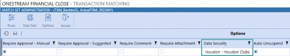
Figure 6.37
Transaction Matching Administration › Administration › Options
Auto Unsuspend
During a period, you will identify transactions that are known to be out of period transactions, which will get Matched in a future period. In this instance, you would suspend the transaction, which is discussed in more detail in Chapter 8.
By default, the transactions will stay in a Suspended state, preventing them from having Match Rules run against them, until a User manually moves the transaction to an Unmatched status. If this option is set to True, the transactions Suspended in a prior Workflow period will be unsuspended, moving them to an Unmatched status, upon running Process. This will allow Match Rules to be run against the previously Suspended transactions. If this option is not enabled, Suspended transactions are excluded from rules-based matching.
| Note: Auto Unsuspend will only unsuspend transactions Suspended in a prior period; anything that is Suspended in the current Workflow period will remain Suspended. |
Transaction Matching Administration › Administration
Manual Matching Tolerances
Because manual matching is a transaction-selecting process, you can select transactions that have an amount variance range by defining and applying tolerances. A tolerance allows transactions to be Matched when they do not have exact matching values, which would otherwise trigger User intervention. Defining a tolerance range (upper and lower levels of acceptable variance) tells the system how far outside of the exact amount it can consider an acceptable match.
Tolerance Type options are numeric or a percentage of the total (or none), and different tolerances can be set against each of the summary fields. If a tolerance is not applied to a summary field, the field will not be considered when determining whether a manual match can occur.
Transaction Matching Administration › Administration › Manual Matching Tolerances
Admin Override
Setting this option to True allows Administrators to create manual matches even if the variance is outside the tolerance threshold for any of the summary fields.
Transaction Matching Administration › Administration › Manual Matching Tolerances
Approver Override
Setting this option to True allows Approvers to create manual matches even if the variance is outside the tolerance threshold for any of the summary fields.
Transaction Matching Administration › Administration › Manual Matching Tolerances
Summary 1-3 Type
The threshold types that can be applied to the summary fields are either numeric or percentage. Remember, you can summarize on up to three fields; some fields may be currency or value fields, while some may be a count, such as inventory. Therefore, keep in mind which fields you established as Summary 1-3 when setting your type.
Transaction Matching Administration › Administration › Manual Matching Tolerances
Summary 1-3 Min
This is a free form text field where you enter the absolute value of the lower limit that would be accepted for a manual match. If you were comparing three currency levels – such as Account, Local, and Reporting – it would be expected to use the same type here, but your minimum and maximum thresholds would most likely be different as currency fluctuates. I would care a lot more about a $1,000 USD variance than a $1,000 MXN variance.
Transaction Matching Administration › Administration › Manual Matching Tolerances
Summary 1-3 Max
This is a free form text field where you will enter the absolute value of the upper limit that would be accepted for a manual match.
Figure 6.38 shows an example of entering your minimum and maximum ranges. Note for Summary 1, we have selected a numeric tolerance type, and for Summary 2 we have selected a percentage type. Therefore, if the variance for Summary 1 is between (10) and 10, it would be possible to create a manual match.
Likewise, if the variance for Summary 2 were between (10%) and 10% of the total amount, a manual match could be created. Additionally, if we had elected to summarize a third field on the Data Set page, and a variance existed on this field, it would not be considered when determining if matching is permitted.
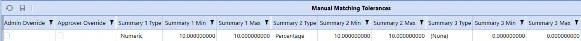
Figure 6.38
Transaction Matching Administration › Administration
Reason Codes
Reason Codes are a custom list created by either a Transaction Matching Administrator or a OneStream Administrator, and are specific to your company. They are not required to be used or configured but are helpful when analyzing information such as why manual matches were made and why transactions were Suspended. This list is provided in a drop-down format when:
A User creates a Match +.
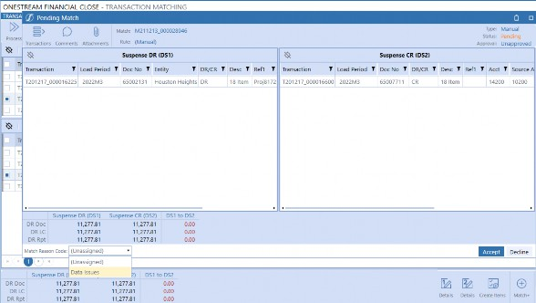
Figure 6.39
A User suspends a transaction.
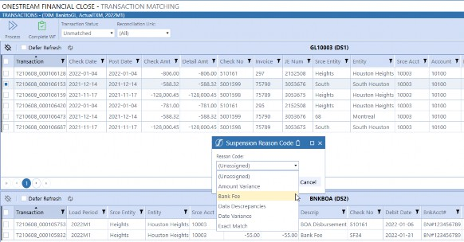
Figure 6.40
Reason Code names cannot be edited once saved. Additionally, a Reason Code cannot be deleted once it is assigned to a match.
Transaction Matching Administration › Administration › Reason Codes
Name
The name created here will be the name displayed in the Reason Code drop-down throughout the solution, as shown in Figures 6.39 and 6.40.
Transaction Matching Administration › Administration › Reason Codes
Description
This is a reference column for the description of the Reason Code. This information is not displayed elsewhere in the solution. The description may be edited at any point.
Transaction Matching Administration › Administration › Reason Codes
Active
By default, this is set to True, meaning the Reason Code will be available for Users to select and apply. Set this to False if the Reason Code is no longer applicable but has been used in the past to create matches or suspend transactions, as Reason Codes used to create matches or suspend transactions cannot be deleted for audit purposes.
Transaction Matching Administration › Administration
Access
Access is configured at the Match Set level. The Access page displays the User’s name and role and each User assigned to the current Match Set. Setting up access here will determine what type of actions the User can take on transactions. Note that this setup is in addition to giving Users access to the Workflow Profile. This page is included within the Administration, in addition to the Access Control within Settings, so that Transaction Matching Administrators can make updates to the security, as they do not have access to the Settings page.
Transaction Matching Administration › Administration › Access
User
A drop-down list of all active OneStream Users. Select a User to add them to the group.
Transaction Matching Administration › Administration › Access
Role
Set the security role for the User here (Preparer, Approver, Commenter, Viewer, or Local Admin). For more information on security roles, see the Access Control section in Settings.
Transaction Matching Administration
Conclusion
In this chapter, we have learned about the components that are used to configure your Transaction Matching solution. Additionally, we have provided examples on when to use data splitting, when to keep all data in a single Match Set, and when to break out information into more granular Match Sets. With the knowledge gained here, you are now ready to move on to implementing the solution in your development environment, which will be discussed in the next chapter.